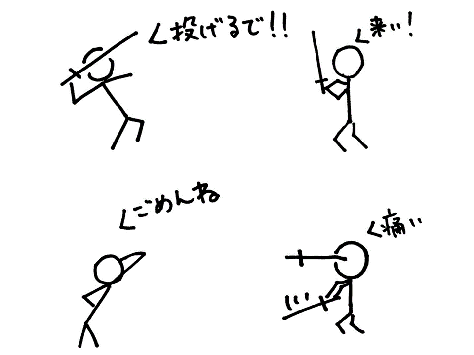
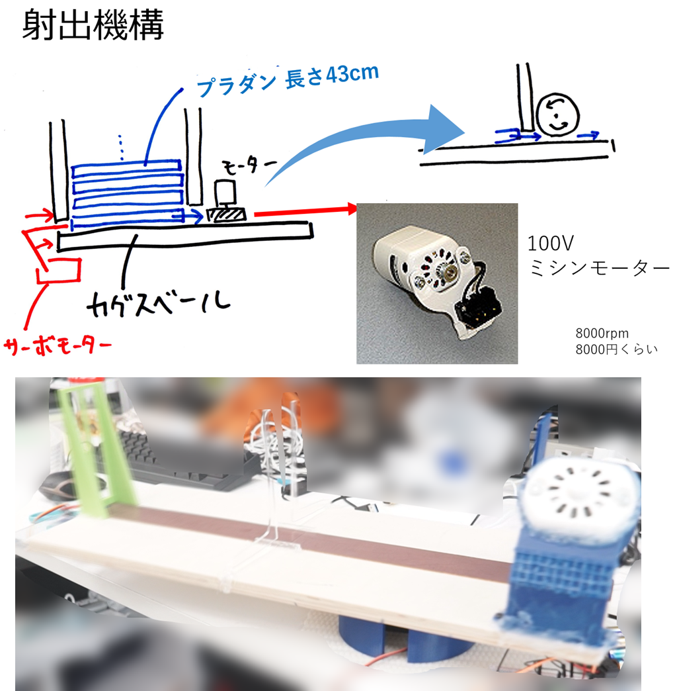
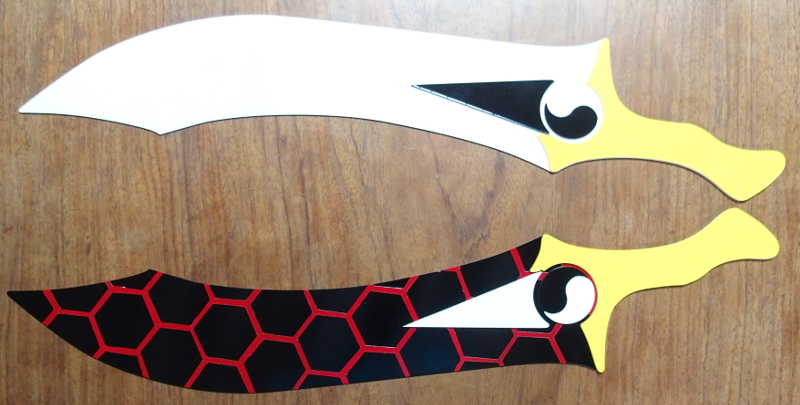

やさしいギルガメッシュ ゲート・オブ・バビロンを自作した話

剣でちゃんばらごっこをするのは男のロマンです．
今回はギルガメッシュと戦いたかったのでゲート・オブ・バビロンを作ることにしました．
しかしいくつかの問題点があります．まず，投げてくれる人がいないということ．そして刺さると危ないということです．

これらを解決するためにやさしいギルガメッシュをつくることにしました．
まずギリギリ人に当たらないような方角に剣を射出します．そして持っている剣を振ったのに合わせて，それに当たるように剣の射出を調整します．

ギルガメッシュといえば慢心しなければ最強格，ということでモーターも奮発しました．
スマホの加速度を送信して，振ると剣が射出されるようにします．

アーチャーの干将莫耶も用意しました！

サーボの調子が悪かったので，今回実装できたのは「持っている剣に合わせて射出をする」機能だけです．
そのため，あまりやさしくないギルガメッシュとなってしまいました．
技術指導：いわたせんぱい
撮影協力：まつおくん